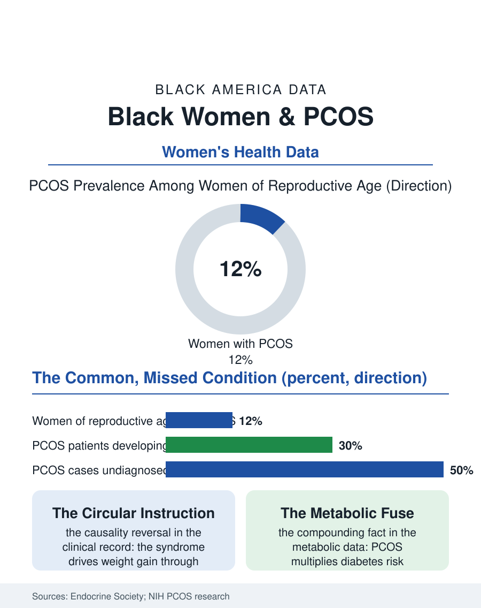

Black Public Health
The Missed Diagnosis: Black Women and PCOS
PCOS affects about one in ten women, multiplies diabetes risk, and is diagnosed latest in Black women, whose presentation the criteria fit worst. The PCOS file.

Polycystic ovary syndrome is among the most common endocrine conditions in women, affecting by the standard estimates somewhere between one in ten and one in eight women of reproductive age, and it is chronically underdiagnosed in Black women, whose presentation of the syndrome differs on average from the textbook picture the diagnostic criteria were built around. The condition drives infertility, diabetes risk, and a long tail of metabolic consequences that echo through this atlas's health files. This article reads the PCOS file.
A Diagnosis That Waits
The diagnosis rests on a combination of signs, irregular ovulation, elevated androgens, and ovarian appearance on ultrasound, and each leg of that tripod fits Black women imperfectly in the clinical literature. The androgen signs are read through hair growth patterns whose norms vary by ancestry; the metabolic features, insulin resistance above all, are often more pronounced in Black patients at the same weight; and the ultrasound criterion was standardized on populations unlike the patients in the waiting room. The result in the health services data is diagnostic delay measured in years and in multiple clinicians seen, a pattern PCOS shares with endometriosis in the women's health file: conditions whose symptoms are normalized, attributed to weight, and returned to the patient as a lifestyle instruction rather than a workup. The weight attribution deserves its own sentence, because it reverses the causality the syndrome's own science establishes: PCOS drives weight gain and resists weight loss through insulin dynamics, so the instruction to lose weight first and return later asks the patient to cure the symptom whose cause is the untreated condition. Black women, carrying the obesity file's burdens and the clinical encounter's documented biases together, meet that circular instruction at elevated rates.
The Metabolic Fuse
PCOS matters beyond fertility because it is a metabolic fuse. The longitudinal studies find women with the syndrome developing type 2 diabetes at several times the rate of unaffected women, with Black patients' baseline risk in the diabetes file compounding the multiplier, alongside elevated rates of hypertension, dyslipidemia, sleep apnea, and fatty liver disease, the entire cardiometabolic syndrome arriving early in a population the health system already serves late. Screening guidelines in the specialty literature call for exactly the response the data support: glucose tolerance testing at diagnosis and periodically after, lipid and blood pressure surveillance, and mood screening, since depression and anxiety travel with the syndrome at high rates. The care pattern in the claims data shows the gaps: the diagnosis, once made, is often siloed in fertility treatment, pursued intensively when pregnancy is the goal and unmanaged when it is not, leaving the metabolic decades unmonitored. The fertility chapter itself repeats the atlas's pattern: Black women with PCOS reach fertility care later and in smaller proportions, and the syndrome is among the most treatable causes of infertility, ovulation induction being inexpensive and effective, which makes the late arrival a pure loss function, years of a treatable condition spent untreated because its name arrived late.
The Recognition Decade
The file's forward chapter is measurably brighter. Research cohorts assembled in the last decade include Black women at rates earlier PCOS science did not attempt, and the phenotype literature, the recognition that the syndrome presents in distinct metabolic and reproductive patterns, has begun to formalize what clinicians in Black-serving practices always knew. Patient communities, substantially led by Black women online, have done the awareness work the specialty was slow to fund, circulating the symptom vocabulary that gets a patient to the appointment with the right questions, the same lay-epidemiology function this atlas records in sickle cell and fibroids. The diagnostic criteria are under active revision internationally, with ultrasound thresholds and adolescent criteria being recalibrated, changes whose equity effects will depend on whether the recalibration cohorts look like the patients. The PCOS file closes with its central irony intact: a condition affecting perhaps a tenth of Black women, treatable in its fertility chapter, manageable in its metabolic one, and inexpensive to screen for, remains underdiagnosed longest in the population whose metabolic risk makes the diagnosis most valuable. The gap is not knowledge; the guideline shelf is full. It is the appointment where the symptoms were first described and first explained away, and the file's data suggest the system meets that appointment better every year, several years behind the women describing them.
More in Black Public Health
Hypertension Among Black Adults: Prevalence, Control, and Consequences
About 55 percent of Black adults have hypertension — the highest rate of any U.S. group. Prevalence, onset, control, and the stroke, heart, and kidney consequences in the data.
Diabetes Among Black Adults: Prevalence and Complications
Nearly one in five Black adults has diabetes, diagnosed or undiagnosed — and its complications fall with particular weight. The CDC data on prevalence, control, and outcomes.
Black Life Expectancy: The Gap at Birth and Its Causes
Black life expectancy at birth is about 73 years, roughly five years below the national figure — the summary measure of every health gap in this section. The CDC data.
Source: Endocrine Society clinical practice guidelines; National Institutes of Health PCOS research; JAMA and Fertility and Sterility cohort studies.